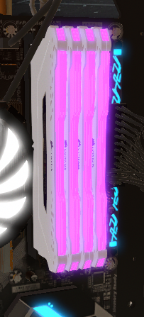

La RAM est un type de mémoire, en l’occurrence une mémoire vive, en opposition à la mémoire morte.
Extrêmement rapide par rapport au disque dur de l’ordinateur, la RAM est indispensable pour une utilisation fluide de n’importe quel PC.
Random Access Memory se traduit en français par « Mémoire à accès non séquentiel » ou « Mémoire à accès aléatoire ».
La RAM peut être comparée à notre mémoire à court terme. D’un point de vue matériel, la RAM se présente sous la forme d’un petit circuit imprimé rectangulaire.
On parle ainsi de barrettes de RAM, qui viennent se brancher sur la carte mère de l’ordinateur.
Ces barrettes se présentent sous deux formats, DIMM pour les ordinateurs fixes et SO-DIMM pour les PC portables.
La RAM s’efface automatiquement lorsque l’ordinateur s’éteint.
Cette mémoire vive est tout simplement indispensable à votre ordinateur :
c’est elle qui permet au processeur de stocker temporairement les données dont il a besoin pour lancer un programme.
Le système d’exploitation (Windows, Mac OS…) lui-même est chargé sur la RAM. Chaque application utilisée est ainsi lancée sur la RAM.
C’est pourquoi plus la RAM est grande, plus l’ordinateur sera rapide et fluide,
ainsi qu’en capacité d’exécuter un grand nombre de logiciels ou d’applications en même temps.
| Source | *Image provenant du jeu "PC Building Simulator". |